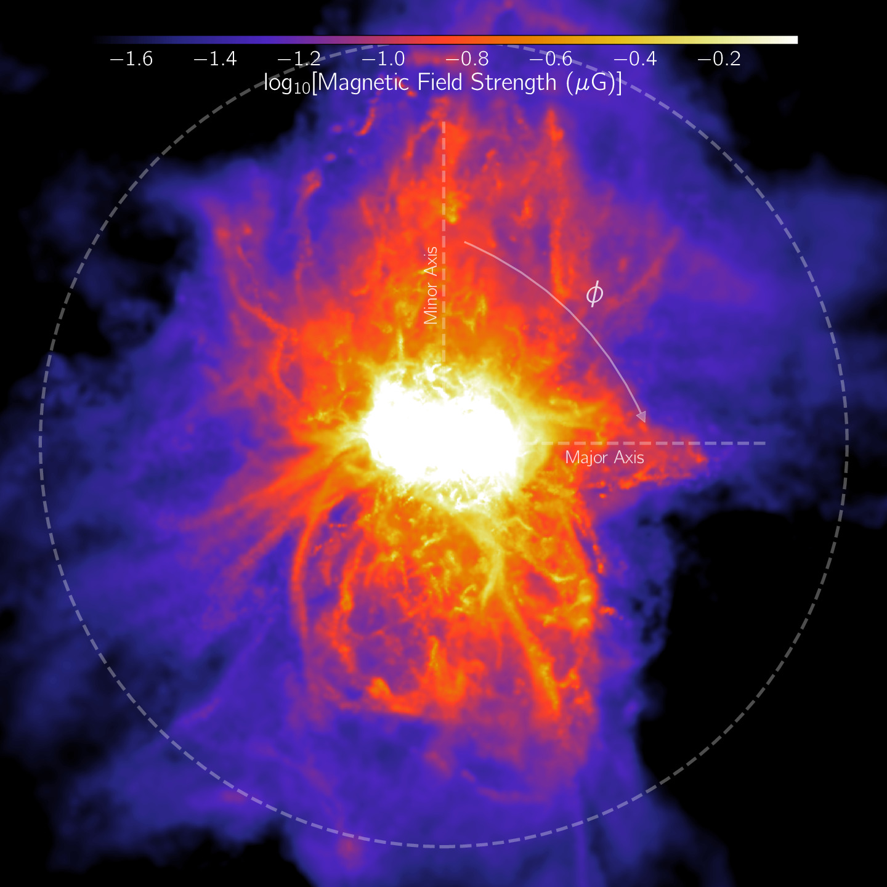

My research primarily focuses on the halo of gas surrounding galaxies — the so-called Circumgalactic Medium (CGM) — with a particular interest, so far, in galaxies resembling our own Milky Way.
I explore this using cosmological magneto-hydrodynamical setups:
IllustrisTNG,
as well as our more recent GIBLE and
TNG+CR simulations.
My academic career began in 2016 at the
Indian Institute of Science Education and Research (IISER) Mohali,
where I obtained an Integrated BS-MS degree, with a major in Physics and a minor in Astronomy.
My final-year MS thesis project was supervised by
Prof. Jasjeet Singh Bagla,
during which we explored various questions related to the gravitational lensing of gravitational waves.
You can read more about some of my recent projects, browse
related media, and view my CV below.
If you’re interested in collaborating, have questions, or just want to say hello,
please do get in touch!
Projects
A complete list of publications that I have contributed to can be accessed
here.
The following are projects that I've played a lead role in:
Ongoing/Future Projects:
Project GIBLE: In order to better study small-scale structure in simulated
Milky Way-like halos, we run 'CGM zoom-ins' for a subset of galaxies from the TNG50
MW-like sample. In these GIBLE (Gas Is Better resoLved around galaxiEs) simulations,
gas in the galaxy is maintained at a resolution equivalent to TNG50-2/TNG100-1, i.e.
the resolution at which the TNG model is calibrated versus observational constraints.
However, using our 'CGM Refinement' technique, the underlying distribution of CGM gas
is preferentially sampled to a better extent. In terms of (CGM gas) resolution, we reach
a level comparable to some of the best (standard) cosmological zoom-in simulations of Milky
Way-like galaxies run till date (~1000 M_sun). As a result of the added computational efficiency
of the CGM Refinement scheme, we are able to simulate a larger sample in comparison to the sims
described above, with Project GIBLE currently comprising of eight MW-like halos. Please see our
intro paper
for more details.
As a first exploration of clouds in GIBLE, we study and quantify the origin and evolution of such
objects. We find that the origin of z=0 clouds can be traced back to recent (<2 Gyr) outflows
from the central galaxy (~45%), condensation out of the hot phase of the CGM in the same time
frame (~45%), and to a lesser degree to satellite galaxies (<5%). The remainder of the cloud
population is long lived, with their progenitors having already assembled ~2 Gyr ago. Collective
cloud-cloud dynamics are crucial to their evolution, with coalescence and fragmentation events
occurring frequently (>20 per Gyr). In addition, these clouds exchange matter with their ambient
backgrounds at a typical rate of a few million M_sun per Myr, modulated by properties such as the
velocity contrast, interface vorticity, effective magnetic tension, amongst other quantities. Please see our
paper for additional details and discussion.
For a couple of halos from this sample, we improve the resolution further, reaching an unprecedented
average gas mass of ~225 M_sun in the CGM. We make use of these runs to study the topology of magnetic
field lines around cold CGM gas clouds. We find large diversity across the sample, from threading to
draping, and there is large variation in the magnetic curvature within cloud-background interfaces.
For more details, please see our paper
here.
Illuminating a Cosmological Box with Cosmic Rays: As a first attempt towards including cosmic ray (CR)
physics in large volume cosmological simulations designed to statistically reproduce the real universe and assessing
their impact on z=0 galaxy, circumgalactic medium (CGM), and halo properties, we run a suite of 25 Mpc/h
boxes with the IllustrisTNG galaxy formation model in conjunction with
this simple CR scheme. We select transport parameters that yield a reasonable trade off between
realistic large-scale integrated properties, and galactic CR pressure profiles predicted by more complex
models. The resulting simulations show that, at fixed halo mass, including CRs does not strongly impact
the temperature, density, or (total) pressure structure of the CGM with respect to the fiducial TNG model.
However, cosmic rays add significant non-thermal pressure support to the halo. This suppresses the star
formation activity and thus stellar masses of galaxies, from dwarf to L* halos. The cosmic star formation
rate density, stellar mass function, and stellar mass to halo mass relation are all reshaped by CRs. Galaxy
sizes and halo-scale gas fractions are more mildly affected, while lower gas densities in the interstellar
medium inhibit supermassive black hole growth. Halo gas is also less magnetized, and less metal enriched.
These differences are primarily driven by suppressed gas accretion onto halos and galaxies, as well as weaker
galactic outflows in the presence of CRs. Our findings are in qualitative agreement with previous studies
of the impact of CRs on galactic outflows, and motivate the inclusion of CR physics in future large-scale
cosmological simulations. For more details, please see our paper
here.
Past Projects:
The Circumgalactic Medium of TNG50 Milky Way-like Galaxies: We use the TNG50 simulation of the
IllustrisTNG project to study the circumgalactic medium of a set of 132 galaxies that are selected
based on their resemblance with the 'real' Milky Way. In
Paper I, we analyze various physical properties of gas: (i) integrated properties across the halo,
and (ii) radial profiles. Both show large variation across our sample of galaxies, as can be visualized in this
infinite gallery, as a combined result of many factors. One of these factors is the feedback energy
injected by the central supermassive black hole (SMBH), which we explore in this paper: in TNG50,
kinetic winds driven by the SMBH heat gas to super-virial temperatures, generate high-velocity
outflows, and regulate the net balance of inflows versus outflows in otherwise quasi-static halos.
In
Paper II, we focus on cold, dense clouds of gas in these CGMs. We find a large variation across the
sample, with number of clouds varying from a ~O(10) to ~O(100), as seen in this
infinite gallery. Distributions of cloud properties are broad, and so are the contrast in properties
between clouds and the ambient medium that they are embedded in. We make these properties publicly available through the
TNG50 Cosmological Cloud Catalog.

CGM Magnetic Field Strength Profiles are Azimuthally Anisotropic: We study the impact of galactic
feedback processes on the angular structure of CGM B-fields using the TNG50 simulations. Despite isotropic
energy injections by SN and AGN feedback, outflows tend to be preferentially oriented perpendicular to
the galactic disk, owing to lower gas densities along these paths. This alignment of outflows gradually
leaves an imprint on the angular structure of CGM gas properties, including B-fields, with stronger field
strengths closer to the minor axis. We find that the level of anisotropy peaks around the Milky Way mass,
and decreases in magnitude in more massive galaxies as AGN feedback quenches and ultimately destroys
the underlying disk structure. For more details, please see our paper
here.
Gravitational Lensing of Gravitational Waves: Akin to electromagnetic radiation, gravitational
waves are deflected by 'massive' objects as they propagate past them. However, their wavelengths
are typically larger than their electromagnetic counterparts. As a result, in certain cases, their
wave nature cannot be ignored, like is usually done while studying lensing of electromagnetic waves.
In this project, we study the impact that these 'wave effects' have on observed signals. In
Paper I, we focus on the (micro-)lensing of stochastic gravitational waves, similar to those
produced during core-collapse supernovae. In addition, we explore more complicated scenarios of
lensing, wherein matter responsible for producing the above mentioned lensing effects are
distributed along multiple lens planes
(Paper II).
Media
Below is a randomly selected collection of movies from our GIBLE simulations.
Feel free to download and use them in, for e.g., talks — please include a credit to 'Project GIBLE' when doing so.
▶
A 360 degree rotation showing the complex metallicity structure of circumgalactic
gas around a Milky Way-like galaxy at z=0.
[download (28MB)]
▶
The low-z evolution of a Milky Way-like galaxy shown through
a projection of gas column density. The kinetic mode channel of black hole feedback in the
TNG model is well seen in action.
[download (18MB)]
▶
The cosmic evolution of a Milky Way-like galaxy over the past ~12.6 Gyr, from z~5
to the present day. The movie begins with a projection of gas temperature, switches to gas metallicity, and
finally to gas column density.
[download (21MB)]
▶
A 360 degree rotation showing, using a simple
perspective projection,
the distrubution of stellar light around a z=0 Milky Way-like galaxy.
[download (53MB)]
▶
A 360 degree rotation showing the complex multi-phase temperature structure of circumgalactic
gas around a progenitor of a Milky Way-like galaxy at z~1.5.
[download (92MB)]
▶
The evolution of a Milky Way-like galaxy from z~3 to the present day,
shown through a projection of gas metallicity.
[download (18MB)]
CV
For a more detailed copy of my CV, please click
here
(last updated on Oct 2 2024). If need be, please
contact me for a more recent version.